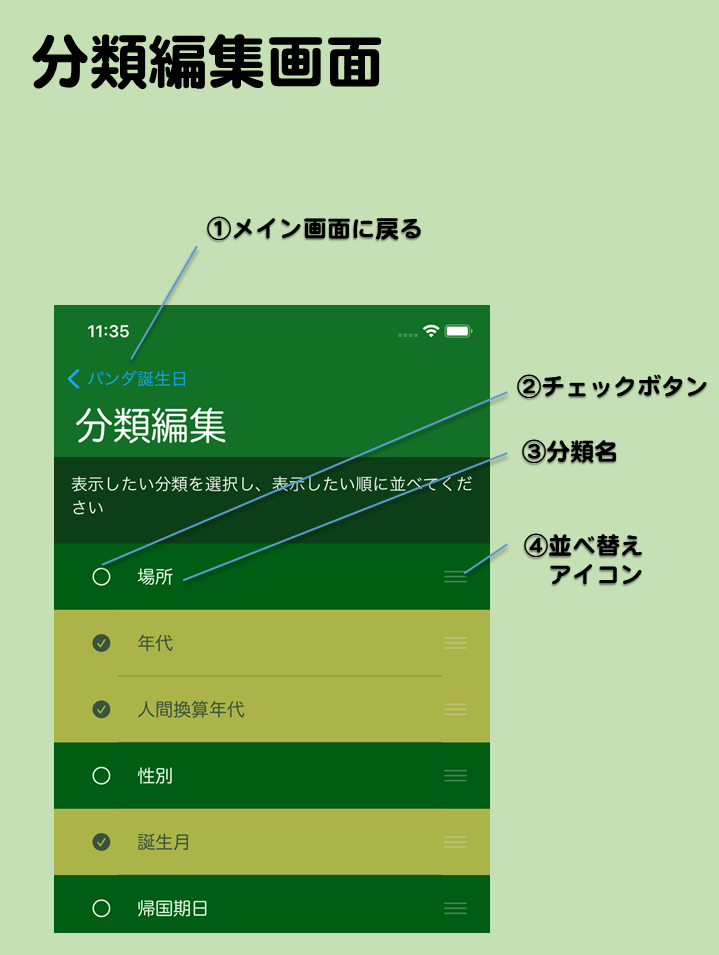

- グルーピング編集画面
- メイン画面でグルーピング編集画面ボタンを押して移動してくる画面です。メイン画面で表示したいグルーピングを選んだり、表示順序を変更したりできます。
- 画面の説明
- ①メイン画面に戻る
- 編集を確定し、メイン画面に戻ります。
- ②チェックボタン
- 該当のグルーピングの選択状態を示します。チェックがついているときはメイン画面で表示できます。
- ③並べ替えアイコン
- このアイコンをドラッグするとグルーピングを上下に並べ替えられます。この順序がメイン画面でグルーピングを表示する順序です。
- グルーピングの説明
-
- 場所
- 現住地もしくはイベントの場所でグルーピングします
- 年代
- 誕生日もしくはイベント日でグルーピングします。未来から過去に並びます
- 人間換算年代
- パンダの年齢を人間の年齢に換算してグルーピングします。未来から過去に並びます
- 誕生月
- 誕生日もしくはイベントの月でグルーピングします。１月から１２月に並びます
- 帰国期日
- パンダの中国への帰国期日でグルーピングします。期日が未定な場合は近日中なら近々、それ以外は未定に分類されます
- 性別
- 性別でグルーピングします
- 種別
- パンダ、人間、その他でグルーピングします
- お気に入り
- お気に入りに入っているか入っていないかでグルーピングします
- 編集可
- 編集可能なユーザー登録データかそれ以外かでグルーピングします